MENU DE NAVEGAÇÃO
Escolha uma região no menu abaixo para saber mais sobre seus elementos, Arcontes e cultura!
Frost Moon
Conhecendo Frost Moon
Frost Moon é uma sub-região pertencente a Nod-Krai, acessada por meio da progressão da série de missões mundiais "Moon Gazing". O local reflete visualmente estruturas massivas que lembram engenhos e elevadores espaciais, resultado do trabalho de antigos pesquisadores dracônicos.
A área é marcada pela presença da Energia Archaeolune, uma força que altera as regras de gravidade do ambiente: saltos comuns se tornam muito mais altos e quedas são consideravelmente mais lentas, reduzindo o dano de queda. Em determinadas zonas, como o Centro de Pesquisa da Tempestade Archaeolune, existem mecânicas únicas de disturbância energética, que podem incapacitar temporariamente o jogador caso ele permaneça fora de zonas seguras.
Frost Moon é dividido em diversas subáreas que vão sendo desbloqueadas conforme o avanço na missão principal, cada uma com seus próprios desafios, colecionáveis e elementos narrativos ligados ao mistério da Lua e ao Projeto Moongazer.
Principais áreas de Frost Moon
Frost Moon é formado por diferentes áreas, cada uma com suas próprias paisagens, características e locais importantes.
1. Dark Side of the Moon
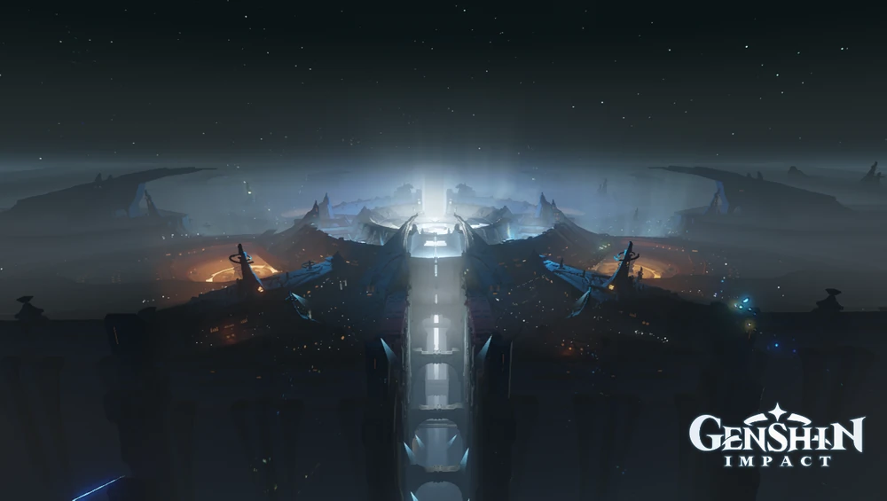
Dark Side of the Moon é uma área localizada no Frost Moon, em Nod-Krai. Ela fica no lado oposto do Frost Moon e abriga uma base construída por antigos pesquisadores dracônicos como parte do Projeto Moongazer. O local reflete o "rosto" do Frost Moon e é composto por corredores em ruínas que ainda guardam vestígios de um povo antigo, além de diversos mecanismos, quebra-cabeças e baús espalhados pela estrutura. O acesso à área é liberado através da missão mundial "Project Moongazer", parte da série "Moon Gazing: Act III".
Subáreas: Dark Side of the Moon.
Dentro da Dark Side of the Moon
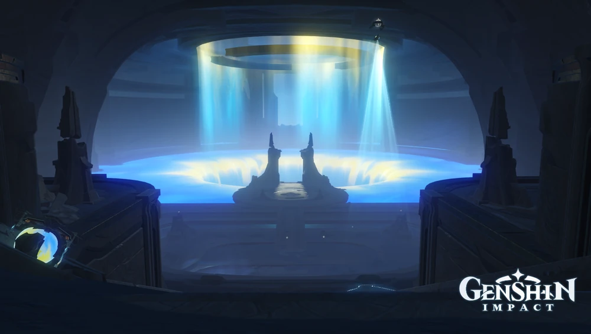
Essa subárea corresponde à base espacial explorável dentro da região do Dark Side of the Moon. No local, os jogadores encontram sistemas de gravidade alterada, incluindo estados de baixa gravidade e anomalias que permitem caminhar até pelas paredes internas de tubos de lançamento. A área conta ainda com estruturas conhecidas como Pioneer Source Structures, máquinas movidas por Energia Archaeolune, além de baús comuns, preciosos, luxuosos e Lunóculos espalhados pelo cenário.
2. Lunar Highlands
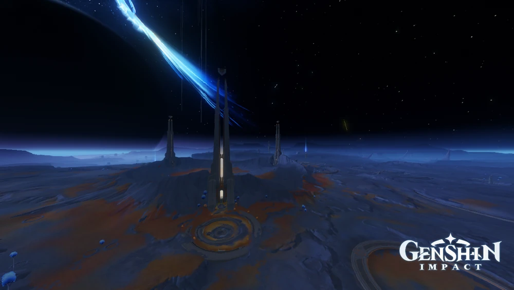
Lunar Highlands é uma área localizada no Frost Moon, em Nod-Krai, sendo considerada a maior e mais complexa região da Lua. O local é dividido em diversas sub-áreas conectadas por Estações de Trânsito de Alta Velocidade, e conta com uma grande quantidade de rotas verticais e mecânicas de gravidade alterada. Devido à sua vasta extensão, é uma das áreas com maior concentração de baús, desafios e colecionáveis de todo o Frost Moon.
Subáreas: Archaeolune Storm Research Center, Bubble Pool, Golden Hall, Nuur Stone Circle, The Eye of Ibni-Belum, Traveler's Crater, Ungien's Circle.
Archaeolune Storm Research Center
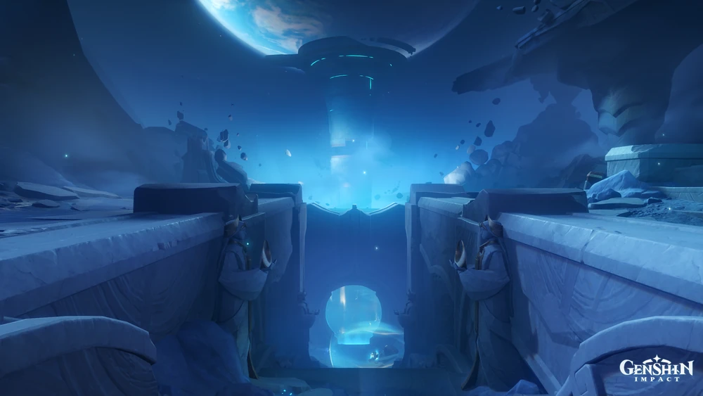
O Archaeolune Storm Research Center é uma instalação de pesquisa criada por antigos dragões para observar as Tempestades de Energia Archaeolune. Toda a área é afetada por uma perturbação energética instável, que pode deixar o jogador exausto e incapacitado caso permaneça exposto por tempo demais, sendo necessário buscar abrigo em campos de oclusão da tempestade espalhados pelo local. Explorar completamente essa área é o caminho necessário para desbloquear o acesso ao Golden Hall.
Bubble Pool
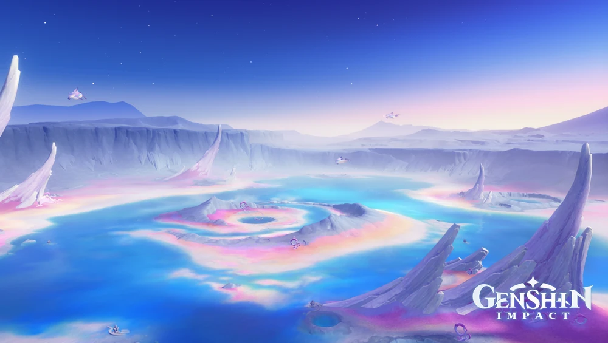
Bubble Pool é uma subárea do Lunar Highlands marcada por uma paisagem aquática e formações de bolhas características da região. O local abriga quebra-cabeças relacionados aos Kuuhenki e às Frostmoon Scions, além de baús e colecionáveis ligados à exploração dessa parte da Lua.
Golden Hall
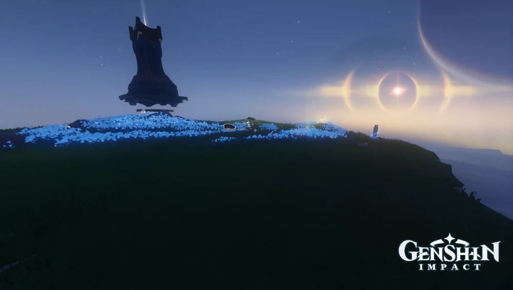
Golden Hall é uma subárea cujo acesso é liberado somente após a exploração completa do Archaeolune Storm Research Center. O local guarda estruturas imponentes e é um dos pontos de destaque do Lunar Highlands, reunindo desafios e recompensas para os jogadores que avançam por essa rota da região lunar.
Nuur Stone Circle
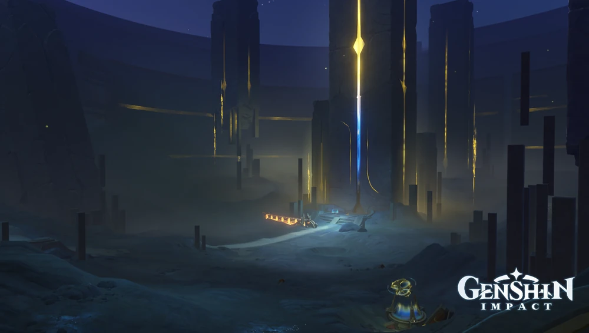
Nuur Stone Circle é uma instalação antiga criada pelos dragões para registrar e armazenar dados de pesquisa coletados no Frost Moon. Acredita-se que o nome do local seja uma homenagem ao dragão Nu-ur-Gestug, responsável por manter o arquivo de armazenamento em funcionamento. A área está fortemente ligada à missão secundária "Ancient Moon's Remnant" e a mistérios sobre consciência e memória dos antigos habitantes da Lua.
The Eye of Ibni-Belum
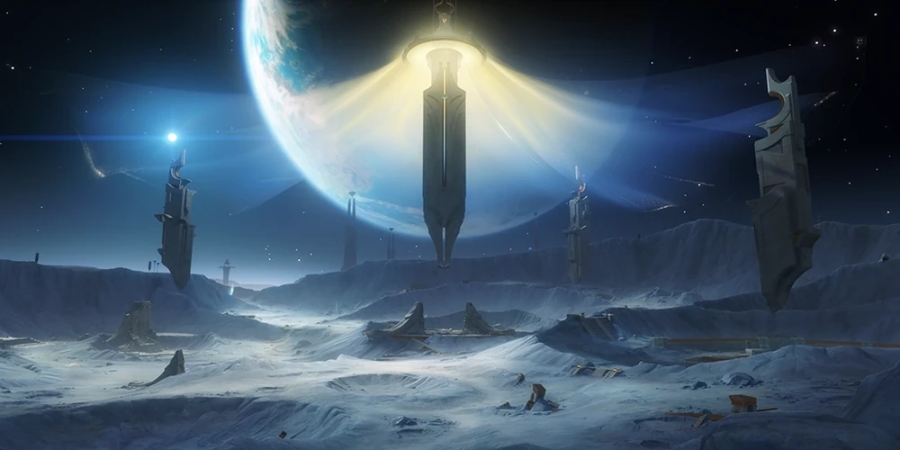
The Eye of Ibni-Belum é um dos pontos de interesse mais notáveis do Lunar Highlands. O local guarda estruturas antigas ligadas aos mistérios do Frost Moon e é uma das primeiras áreas exploradas durante a missão "Pioneers", reunindo diversos baús e desafios ao longo de seu percurso.
Traveler's Crater

Traveler's Crater é uma cratera localizada no Lunar Highlands, marcada por formações rochosas resultantes do impacto que a originou. O local está entre os pontos de interesse notáveis dessa área da Lua.
Ungien's Circle

Ungien's Circle é uma área especial dentro do Lunar Highlands que se destaca por não sofrer os efeitos da turbulenta Energia Archaeolune presente no restante do Frost Moon, funcionando como uma espécie de zona estável em meio às anomalias gravitacionais da Lua. O local também abriga o Site de Tesouro do Lunar Highlands, desbloqueado após a coleta de três Selos do Frost Moon.
3. Moontide Sea
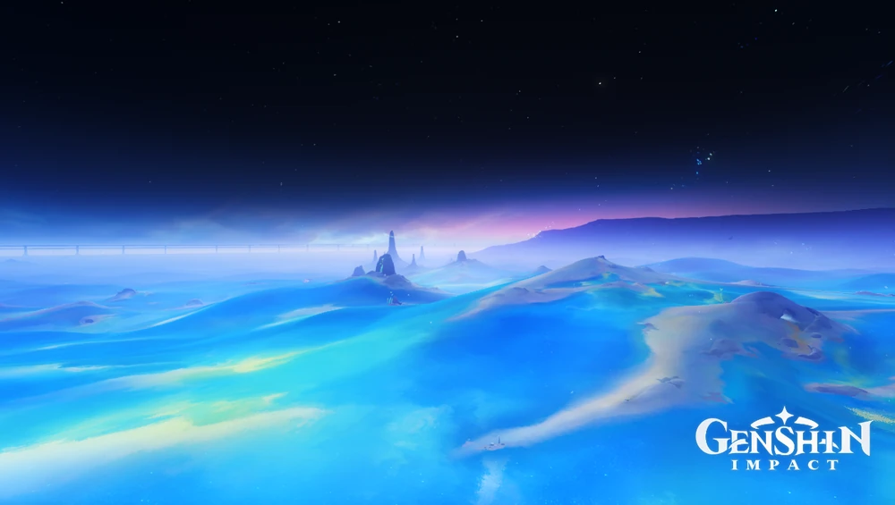
Moontide Sea é uma área localizada no Frost Moon, em Nod-Krai, marcada por uma vasta extensão de água lunar e por uma forte instabilidade de Energia Archaeolune. O local exige atenção redobrada durante a exploração, já que permanecer exposto por tempo demais na área pode esgotar o jogador e levá-lo de volta à última zona segura visitada. Apesar dos riscos, a região reúne diversos quebra-cabeças, baús e colecionáveis, sendo uma das maiores zonas de exploração do Frost Moon.
Subáreas: Curtain-Form Blackbody Containment Lab, Moontide Sea.
Moontide Sea
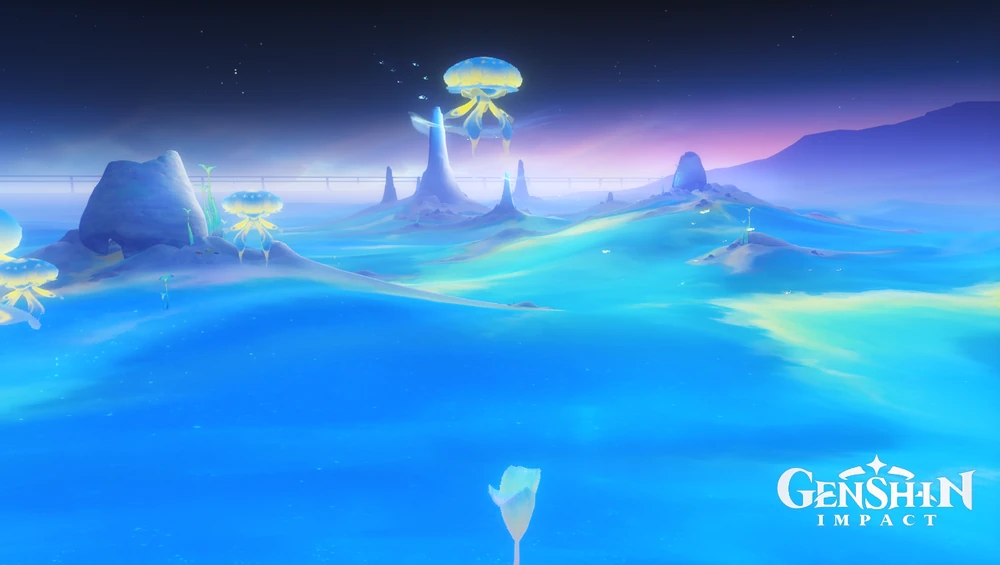
Essa subárea corresponde ao corpo principal de água que dá nome à região, formado por ilhas dispersas e zonas afetadas por energia instável. O local guarda Estruturas de Origem Pioneira, criaturas Kuuhenki que podem ser seguidas até santuários escondidos, além de baús comuns, exóticos e preciosos, sendo também onde é possível iniciar a missão "Beneath the Lunar Sea".
Curtain-Form Blackbody Containment Lab
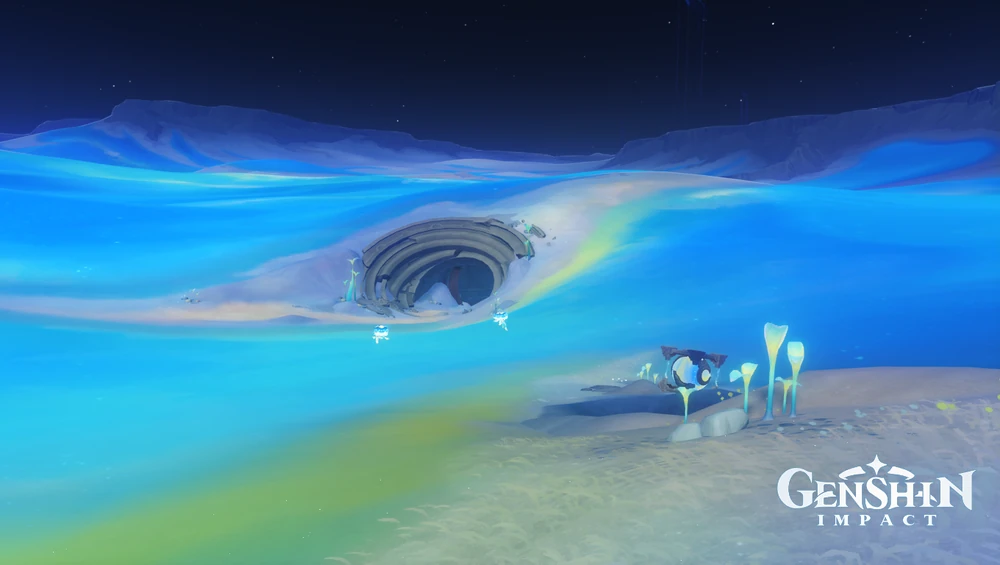
O Curtain-Form Blackbody Containment Lab é uma subárea localizada ao sul do Moontide Sea, cujo acesso é liberado após a conclusão da missão mundial "Beneath the Lunar Sea". O laboratório abriga a Relíquia Antiga da Lua de mesmo nome, situada junto à Árvore Sombria da Lua, e está diretamente ligado às pesquisas do Professor Maagees sobre a chamada "Matéria de Corpo Negro", uma substância capaz de reagir com a Energia Archaeolune e de se fundir com plantas e animais. O local também funciona como um posto de trocas, permitindo que os jogadores utilizem Selos Lunares para obter recompensas como Primogemas, Encontro do Destino e a Bússola de Tesouros Lunar.
↑ Voltar ao início